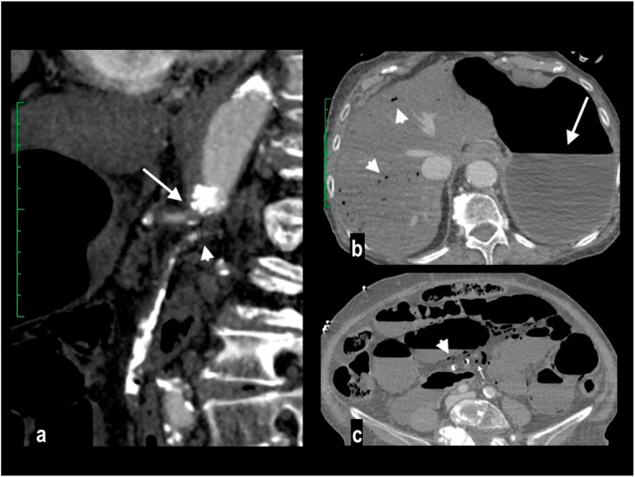
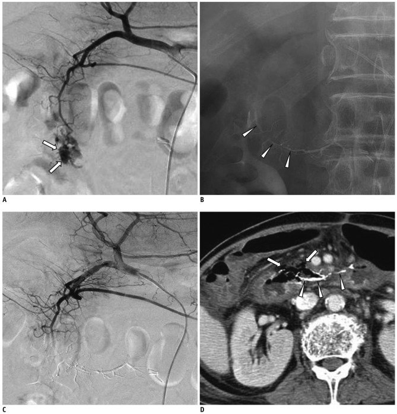
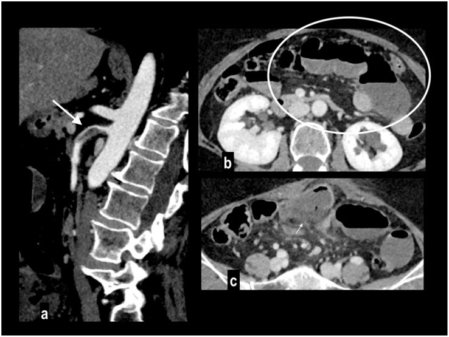

1835 — Thiếu máu ruột sau nút mạch mạc treo: vùng nào không được nút / Post-embolization bowel ischemia
Tags: pattern:thieu-mau-ruot pattern:nhoi-mau-ruot pattern:khi-trong-thanh-ruot pattern:hep-mach-mac-treo pattern:chay-mau-tieu-hoa vung:ruot-non vung:dai-trang vung:o-bung vung:mach-treo-trang-tren protocol:CTA-3-thi protocol:DSA-nut-mach protocol:CT-bung
Mức chắc chắn (certainty): tổng hợp y văn (literature synthesis) — ghép 1 meta phân tích 58 nghiên cứu/2.262 bệnh nhân về nút mạch chảy máu tiêu hóa dưới (Eur J Med Res 2025, PMC12776983, CC BY 4.0), 1 đoàn hệ 31 ca nút mạch ruột non (Ann Gastroenterol 2024, PMC11372541, CC BY-NC-SA 4.0), 1 tổng quan kỹ thuật nút mạch tiêu hóa trên (Korean J Radiol 2012, PMC3341458, CC BY-NC 3.0), 1 tổng quan chảy máu tiêu hóa dưới (J Interv Med 2019, PMC8562260, CC BY-NC-ND 4.0), 2 tổng quan hình ảnh thiếu máu mạc treo (Diagnostics 2024 PMC11202795 CC BY 4.0; Diagnostics 2026 PMC12840507 CC BY 4.0) và 1 đoàn hệ so sánh siêu chọn lọc – chọn lọc (Front Med 2025, PMC12702910, CC BY 4.0). Không có thử nghiệm ngẫu nhiên nào về ngưỡng mổ sau nút mạch → mục 4 là tổng hợp thực hành, không phải khuyến cáo hội.
Câu chốt: nút mạch tiêu hóa trên dây chằng Treitz an toàn vì có vòng nối đôi, còn dưới dây chằng Treitz (trừ trực tràng) là mạch tận — không có nguồn máu thứ hai (PMC8562260). Vì vậy "nút mạch cầm máu" và "nút mạch gây thiếu máu ruột" chỉ khác nhau ở vị trí và mức độ chọn lọc: nút siêu chọn lọc tại điểm chảy giữ được vòng nối, nút đoạn dài/thân chung thì không. Tỉ lệ thiếu máu nhẹ sau nút mạch chảy máu tiêu hóa dưới gộp là 4,7% (95% CI 2,9–6,7), biến chứng nặng 4,3% — và đã giảm từ 12,7% xuống 6,3% sau 2010 (PMC12776983). Dấu CT sớm nhất không phải khí mà là thành ruột mỏng như giấy, giảm ngấm; khí trong thành và khí cửa chỉ xuất hiện khi đã có hoại tử xuyên thành.
1. Tổng quan bệnh học – cơ chế hình ảnh
1.1 Vì sao nút mạch gây thiếu máu: áp lực tưới máu và giải phẫu mạch tận
- Nút mạch không "cắt" máu mà hạ áp lực tưới máu xuống dưới ngưỡng nuôi niêm mạc. Ruột chịu được giảm 75% lưu lượng trong 12 giờ mà chưa tổn thương, nhờ ba tầng vòng nối: thân tạng – mạc treo tràng trên (vòng tá tụy), mạc treo tràng trên – mạc treo tràng dưới (cung Riolan + động mạch bờ Drummond), và trực tràng (mạc treo tràng dưới + động mạch chậu trong) (PMC12840507; PMC11202795).
- Ba điểm phân thủy (watershed) thiếu máu trước tiên khi lưu lượng giảm: góc hồi–manh tràng, góc lách (điểm Griffiths) và góc trực–sigma (điểm Sudeck) (PMC11202795). Đây cũng là nơi tổn thương lan rộng nhất khi nút mạch bờ.
- Mạch tận là tử huyệt: các nhánh jejunal/ileal và vasa recta đi thẳng vào thành ruột, không có vòng nối trong thành. Nút một nhánh tận = nút cả đoạn ruột do nhánh đó nuôi. Ngược lại, dạ dày – tá tràng – trực tràng có hai nguồn nên nút một nguồn vẫn sống (PMC8562260; PMC3341458).
- Vì sao thành ruột "mỏng như giấy": niêm mạc và lớp cơ mất trương lực do thiếu ATP → ruột giãn, thành mỏng, không ngấm cản quang vì không còn dòng máu mang iod tới. Khi tái tưới máu, thành dày lên và ngấm trở lại — đó là lý do cùng một bệnh cảnh có thể thấy "mỏng" ở thì sớm và "dày" ở lần chụp sau (PMC11202795, Bảng 1).
- Vì sao có khí: hoại tử niêm mạc → vi khuẩn sinh hơi vào thành (pneumatosis) → hơi theo tiểu tĩnh mạch mạc treo về hệ cửa (khí cửa – khí gan). Vì vậy khí là dấu hiệu muộn của hoại tử xuyên thành, không phải dấu hiệu sớm (PMC11202795).
- Ba giai đoạn mô bệnh (quyết định can thiệp): I – hoại tử/loét/phù chỉ ở niêm mạc (hồi phục); II – lan tới dưới niêm mạc và lớp cơ; III – hoại tử xuyên thành (phải cắt ruột) (PMC11202795).
1.2 Ngưỡng định lượng nằm lòng
| Đại lượng | Số liệu | Nguồn |
|---|---|---|
| Khả năng chịu thiếu máu của ruột | giảm 75% lưu lượng × 12 giờ không tổn thương (nhờ vòng nối) | PMC12840507 |
| Độ nhạy/độ đặc hiệu MDCTA | Se 94% / Sp 95% | PMC11202795 |
| Thuốc cản quang cho CTA mạc treo | 2 mL/kg nồng độ 350 mgI/mL, tốc độ 4 mL/s; bolus-tracking ngưỡng 150 HU | PMC12840507 |
| Thì chụp | không cản quang → động mạch 30 giây → tĩnh mạch 60–70 giây; thì muộn 3 phút khi cần | PMC11202795 |
| Lát cắt / tái tạo | 1–2 mm + MPR/MIP | PMC11202795 |
| Lactate máu | chỉ tăng ở 32–50% ca thiếu máu mạc treo → lactate bình thường không loại trừ | PMC12840507 |
| Tỉ lệ tử vong thiếu máu mạc treo cấp | 50% (AMESI, 32 trung tâm); tới 90% nếu chẩn đoán muộn | PMC12840507; PMC11202795 |
| Nút mạch chảy máu tiêu hóa dưới (gộp 58 nghiên cứu, 2.262 ca) | kỹ thuật 97,7%, lâm sàng 75,0%, tái chảy máu 17,3%, biến chứng nặng 4,3%, thiếu máu nhẹ 4,7%, biến chứng phụ 10,8% | PMC12776983 |
| Xu hướng theo thời gian | biến cố thiếu máu gộp 12,7% (trước 2010) → 6,3% (sau 2010) | PMC12776983 |
| Nút mạch ruột non (31 ca) | cắt ruột vì thiếu máu 6,5% (2/31); tái chảy máu 29%; tử vong trong viện 23% | PMC11372541 |
| Chất nút và thiếu máu (dẫn từ y văn) | NBCA: 14% (10/72) và 5,5% (2/36); coil đơn thuần: 0% (2 loạt nhỏ) | PMC11372541 |
| Nút mạch tiêu hóa trên | kỹ thuật 92–100%, lâm sàng 51–94%, tái chảy máu 9–47%, tử vong 30 ngày 3–27%; hẹp tá tràng 16% (9/57) | PMC3341458 |
| Siêu chọn lọc vs chọn lọc (116 ca) | tái chảy máu trong 3 ngày 8,33% vs 27,50% (p = 0,017); cả 5 ca thiếu máu ruột đều thuộc nhóm chảy máu tiêu hóa dưới (28 ca) | PMC12702910 |
| Ngưỡng phát hiện của chẩn đoán | DSA cần ≥ 1 mL/phút; CTA ≥ 0,5 mL/phút; Tc-99m RBC 0,1–0,4 mL/phút | PMC8562260 |
2. Mẫu hình + chẩn đoán phân biệt theo vị trí (gamut)
Mẫu hình chung: một đoạn ruột (không phải toàn bộ) giãn, thành mỏng như giấy, giảm ngấm ở thì động mạch–tĩnh mạch, ranh giới theo lãnh thổ mạch đã nút; sau 24–72 giờ có thể thêm khí trong thành, khí cửa, dịch quanh ruột, thành ruột không xác định bờ.
- Nút mạch tiêu hóa trên (thân tạng): dạ dày, tá tràng, GDA. Nguy cơ thấp nhờ vòng tá tụy và thân tạng; biến chứng muộn hay gặp hơn là hẹp tá tràng (16%) chứ không phải hoại tử (PMC3341458).
- Nút mạch ruột non (nhánh jejunal/ileal, mạc treo tràng trên): nguy cơ cao nhất — mạch tận; đây là nơi gặp 6,5–14% thiếu máu phải cắt ruột (PMC11372541).
- Nút mạch đại tràng phải (ileocolic, right/middle colic): nguy cơ trung bình — có động mạch bờ, nhưng góc hồi–manh tràng là điểm phân thủy.
- Nút mạch đại tràng trái (left colic, mạc treo tràng dưới): nguy cơ trung bình–cao — điểm Griffiths ở góc lách; vùng chuyển tiếp giữa hai hệ.
- Nút mạch trực tràng: an toàn vì có nguồn thứ hai từ động mạch chậu trong (PMC8562260).
- Nút mạch "mù" (prophylactic) khi DSA âm: chấp nhận được ở tiêu hóa trên, nguy hiểm ở tiêu hóa dưới vì không có mạch đôi — chỉ làm khi đã định vị chắc bằng CTA/xạ hình (PMC8562260).
3. Bảng so sánh phân biệt (ma trận đối chiếu)
| Thực thể (entity) | Hình ảnh điển hình | Chốt vào (rule-in) | Chốt loại (rule-out) | Gợi ý xác nhận |
|---|---|---|---|---|
| Thiếu máu ruột do nút mạch (sớm, < 72 giờ) | Đoạn ruột giãn, thành mỏng như giấy, giảm ngấm, ranh giới đúng lãnh thổ mạch đã nút; dịch quanh ruột | Đau bụng tăng sau nút mạch + thành mỏng/giảm ngấm trong vùng đã nút | Thành dày đều, ngấm bình thường, không đau → chỉ theo dõi | CTA 3 thì; nội soi/CT lại sau 24–48 giờ; lactate |
| Hội chứng sau nút mạch (PES) | Sốt, đau, buồn nôn 24–72 giờ, không có dấu ruột; tổn thương đích có thể có khí "bình thường" | WBC đi xuống + đau giảm dần trong 3–5 ngày | WBC đi lên, đau tăng, khí tăng dần, thành ruột mỏng → không phải PES | Theo dõi 48–72 giờ; CT khi xấu đi (bài 1834) |
| Nhồi máu ruột do huyết khối/thuyên tắc (không do nút) | Cùng mẫu hình nhưng có cục máu tắc trong động mạch hoặc không có tiền sử can thiệp | Khuyết thuốc trong SMA/nhánh + thiếu máu ngoài vùng can thiệp | Có can thiệp đúng vùng, mạch thông → nghĩ do nút mạch | CTA; DSA; siêu âm tim nếu nghi nguồn thuyên tắc |
| Viêm ruột do xạ / viêm ruột cấp | Thành dày, phù dưới niêm mạc, ngấm tăng, mạch thông | Thành dày + ngấm mạnh + mạch thông + bối cảnh xạ/viêm | Thành mỏng, giảm ngấm, có can thiệp mạch → thiếu máu | CTA; nội soi; bệnh sử |
| Hẹp ruột do thiếu máu (muộn, 2–6 tuần) | Đoạn hẹp, thành dày xơ, giãn ruột phía trên, không khí trong thành | Hẹp + tiền sử nút mạch/thiếu máu + không khối | Khối u/viêm Crohn (có tổn thương niêm mạc đặc trưng) | CT bụng có cản quang; nội soi; mô bệnh nếu cần |

Trái (a): MIP sagittal — tắc nguyên ủy thân tạng (mũi tên) và mạc treo tràng trên (đầu mũi tên). (b): khí trong gan (đầu mũi tên) + dạ dày giãn (mũi tên). (c): thành ruột giãn mỏng như giấy, giảm ngấm, khí trong thành (đầu mũi tên) và khí trong tĩnh mạch mạc treo (mũi tên) — giai đoạn III, bệnh nhân tử vong. Nguồn: Diagnostics 2024, PMC11202795, CC BY 4.0.Dấu hiệu đọc đúng thứ tự thời gian
- Sớm (0–6 giờ): thành mỏng, giảm ngấm, ruột giãn, dịch quanh ruột ít. Đây là cửa sổ can thiệp.
- Trung gian (6–24 giờ): bờ thành không xác định, dịch quanh ruột nhiều hơn, mạch máu mạc treo ứ/căng.
- Muộn (> 24 giờ): khí trong thành, khí cửa–khí gan, khí tự do, hơi trong tổn thương đã nút không còn "bình thường" nếu kèm thành mỏng và WBC tăng.
4. Protocol chụp + hệ phân độ/điểm chuẩn hóa
4.1 CTA mạc treo — protocol tối thiểu
- Không cản quang trước: tìm thành ruột/tổ chức trong lòng tăng đậm tự nhiên (dấu xuất huyết niêm mạc) và vôi hóa mạch.
- Thì động mạch (bolus-tracking 150 HU, khoảng 30 giây): tìm tắc – hẹp – giả phình – coil/plug đã đặt, và thành ruột giảm ngấm.
- Thì tĩnh mạch cửa (60–70 giây): đánh giá tĩnh mạch mạc treo, khí cửa, ngấm thành ruột thì muộn (thành ngấm bù sau thiếu máu).
- Thì muộn 3 phút khi nghi thiếu máu không tắc (NOMI) hoặc cần phân biệt ngấm bù.
- Tái tạo 1–2 mm + MPR/MIP, đo đường kính và độ dày thành tại chỗ dày nhất và chỗ mỏng nhất; cửa sổ nhu mô để không bỏ khí thành.
- Không dùng cản quang đường uống (che thành ruột, giảm tương phản thành–lòng) (PMC11202795).
4.2 Chọn mức nút mạch — quyết định trước khi gây thiếu máu
Ba kiểu nút theo mức (PMC3341458, Fig. 1):
- Khu trú (localized): siêu chọn lọc đúng điểm chảy, không nút nhánh lành → giữ vòng nối, nguy cơ thiếu máu thấp nhất.
- Gần (proximal): nút thân nhánh phía trên điểm chảy khi microcatheter không vào được — chấp nhận mất một phần lãnh thổ.
- Đoạn (segmental): nút cả điểm chảy + nhánh bên cạnh để chặn dòng ngược — nguy cơ thiếu máu cao nhất.
- Chọn chất nút: coil cho mạch lớn, nhìn thấy rõ, ít nguy cơ hoại tử nhất trong các loạt nhỏ; NBCA/keo khi rối loạn đông hoặc cần nút mao mạch — nhưng keo đi xa và gây thiếu máu nhiều hơn; hạt (particles) chỉ dùng khi điểm chảy không thấy được và chấp nhận nguy cơ (PMC3341458; PMC11372541).
- Nguyên tắc vàng: nút càng xa càng tốt, càng ít nhánh càng tốt; nếu phải nút đoạn dài ở ruột non/đại tràng trái, ghi rõ trong phiếu để theo dõi sát 24–48 giờ.
flowchart TD
A[Đau bụng và/hoặc sốt sau nút mạch tiêu hóa] --> B[CTA 3 thì trong 6 giờ]
B --> C{Có thành ruột mỏng giảm ngấm trong vùng đã nút?}
C -->|Không| D[Theo dõi PES: dịch, giảm đau, kháng sinh theo chỉ định]
C -->|Có| E{Có khí trong thành, khí cửa, khí tự do, hoặc viêm phúc mạc?}
E -->|Có| F[Mổ cắt ruột hoại tử - không chờ]
E -->|Không| G[Lactate, WBC, khám bụng lại sau 6-12 giờ]
G --> H{Xấu đi?}
H -->|Có| F
H -->|Không| I[CTA/CT lại 24-48 giờ - theo dõi hẹp muộn]
4.3 Phân độ và ngưỡng xử trí
| Mức | Dấu hiệu | Xử trí |
|---|---|---|
| 0 – Không thiếu máu | Thành ruột bình thường, mạch thông | Theo dõi PES (bài 1834) |
| 1 – Thiếu máu niêm mạc (hồi phục) | Thành mỏng nhẹ, giảm ngấm khu trú, không khí | Nhịn ăn, dịch, kháng sinh, CTA lại 24 giờ |
| 2 – Thiếu máu xuyên thành | Thành mỏng rõ + khí trong thành, dịch quanh ruột, lactate tăng | Mổ (cắt đoạn, không nối thì đầu) |
| 3 – Hoại tử/thủng | Khí cửa–khí gan, khí tự do, viêm phúc mạc | Mổ cấp cứu, hồi sức |
- Ngưỡng mổ không phải một con số lactate mà là tổ hợp: khí trong thành/khí cửa + đau tăng + viêm phúc mạc. Lactate chỉ tăng ở 32–50% ca (PMC12840507) nên không dùng lactate để loại trừ.
- Sau nút mạch tiêu hóa dưới, nếu bệnh nhân đau nhiều và có tiền sử nút đoạn dài, hạ ngưỡng chụp lại xuống 6–12 giờ thay vì 24 giờ.
5. Biến thể bình thường và cạm bẫy
- PES là bắt chước số 1: sốt + đau + tăng bạch cầu trong 24–72 giờ sau nút mạch là phản ứng viêm vô khuẩn, không phải thiếu máu. Phân biệt bằng xu hướng WBC và thời gian, không bằng một lần CRP (bài 1834).
- Khí trong tổn thương đã nút là bình thường — nhưng khí trong thành ruột thì không. Hai chữ "khí" khác hẳn nhau về ý nghĩa.
- "Thành mỏng như giấy" có thể là ruột giãn do tắc ruột non — đo trên cửa sổ nhu mô, so sánh đoạn bệnh/đoạn lành, và luôn tìm giảm ngấm đi kèm; giãn đơn thuần vẫn ngấm đều.
- Thiếu máu không tắc (NOMI) cho hình ảnh giống hệt nhưng mạch thông hoàn toàn, thường sau sốc/hồi sức; đừng quy cho "nút mạch" khi bệnh nhân vừa bị tụt áp kéo dài.
- Nút mạch "mù" ở tiêu hóa dưới là cạm bẫy chết người: không có mạch đôi, thiếu máu có thể xảy ra dù không thấy điểm chảy (PMC8562260).
- Coil ở mạch tận nhỏ có thể gây viêm ruột thừa do thiếu máu (nút động mạch ruột thừa) hoặc thiếu máu đại tràng phải phải cắt nửa đại tràng — biến chứng của chính kỹ thuật, không phải của bệnh nền.
- Nút mạch ở bệnh nhân đã mổ/mô phúc mạc dính hoặc đã xạ: vòng nối đã bị cắt → nguy cơ thiếu máu tăng rõ; đây là nhóm không được nút mù (PMC3341458).
6. Tự lượng giá — Blind Quiz
Ca 1 — Nam 65 tuổi, melena, nút mạch nhánh GDA bằng NBCA đoạn dài. Ngày 4 đau bụng tăng, sốt 38,5 °C.

- Hỏi: (1) Mô tả tổn thương trên CT; (2) ba chẩn đoán phân biệt; (3) xử trí?
Bấm để hiện đáp án (findings + chẩn đoán)
- Dấu hiệu: (A) thoát mạch từ nhánh nhỏ GDA (mũi tên); (B, C) cast NBCA đoạn dài (đầu mũi tên); (D) CT ngày 4: thiếu máu và thủng ruột (mũi tên) + viêm phúc mạc quanh vật liệu nút (đầu mũi tên).
- Chẩn đoán: thiếu máu – thủng ruột sau nút mạch đoạn dài bằng NBCA — keo đi xa vào mao mạch, không còn vòng nối.
- Phân biệt: PES (không có khí/thủng, WBC đi xuống); thiếu máu do huyết khối mới; áp-xe ổ hoại tử (khí trong ổ, không trong thành ruột).
- Xử trí: mổ cấp cứu — cắt đoạn ruột hoại tử, không nối thì đầu; kháng sinh phổ rộng.
- Phản biện: ca này dưới dây chằng Treitz nhưng tổn thương lại ở tá tràng/GDA — vùng có mạch đôi; thiếu máu xảy ra vì nút đoạn dài + keo lỏng đi xa, không phải vì giải phẫu. Đây chính là điểm cần nhớ: kỹ thuật quan trọng hơn vùng.
- Nguồn ảnh: Korean J Radiol 2012, PMC3341458, CC BY-NC 3.0.
Ca 2 — Nữ 78 tuổi, đau bụng dữ dội, không có tiền sử can thiệp.
- Hỏi: dấu hiệu nào cho biết đã hoại tử xuyên thành? Vì sao khí trong gan lại xuất hiện?
Bấm để hiện đáp án (findings + chẩn đoán)
- Dấu hiệu: tắc nguyên ủy thân tạng và mạc treo tràng trên; khí trong gan (khí cửa lan vào gan); thành ruột mỏng như giấy, giảm ngấm, khí trong thành và khí tĩnh mạch mạc treo.
- Cơ chế: hoại tử niêm mạc → vi khuẩn sinh hơi vào thành → hơi theo tiểu tĩnh mạch mạc treo → tĩnh mạch cửa → gan (khí cửa thường ngoại vi, khác khí trong đường mật ở trung tâm).
- Chẩn đoán: thiếu máu mạc treo giai đoạn III — chỉ định mổ, tiên lượng rất xấu.
- Nguồn ảnh: Diagnostics 2024, PMC11202795, CC BY 4.0.
Ca 3 — Nam 66 tuổi, hẹp mạc treo tràng trên, đau bụng 12 giờ, lactate 2,1 mmol/L.

- Hỏi: vì sao lactate bình thường không loại trừ? Dấu hiệu nào trên (b) là sớm nhất?
Bấm để hiện đáp án (findings + chẩn đoán)
- Dấu hiệu: (a) mảng xơ đậm độ thấp ở SMA gần nguyên ủy, hẹp lòng (mũi tên); (b) quai ruột non giãn, thành mỏng như giấy (vòng tròn); (c) hoại tử xuyên thành từng đoạn ở bờ mạc treo (mũi tên).
- Vì sao lactate bình thường: lactate chỉ tăng ở 32–50% ca; tổn thương niêm mạc khu trú chưa đủ gây toan chuyển hóa. Quyết định dựa vào hình ảnh + đau lệch xa thăm khám, không dựa lactate.
- Chẩn đoán: thiếu máu mạc treo do huyết khối trên mảng xơ (khác thuyên tắc: thường có vòng nối, khởi phát từ từ).
- Nguồn ảnh: Diagnostics 2024, PMC11202795, CC BY 4.0.
Bài liên quan chéo
- 1834 – Hội chứng sau nút mạch: phân biệt viêm lành tính với nhiễm trùng/áp-xe
- 1833 – Vascular plug trong nút mạch tạng: chọn cỡ, kỹ thuật, khi nào plug hơn coil
- 1819 – Chảy máu muộn & giả phình mạch tạng
- 135 – Viêm tụy cấp (Atlanta) & ổ hoại tử
- 920 – Nút mạch trong chảy máu tiêu hóa
Không dùng để chẩn đoán độc lập khi chưa có người hướng dẫn.